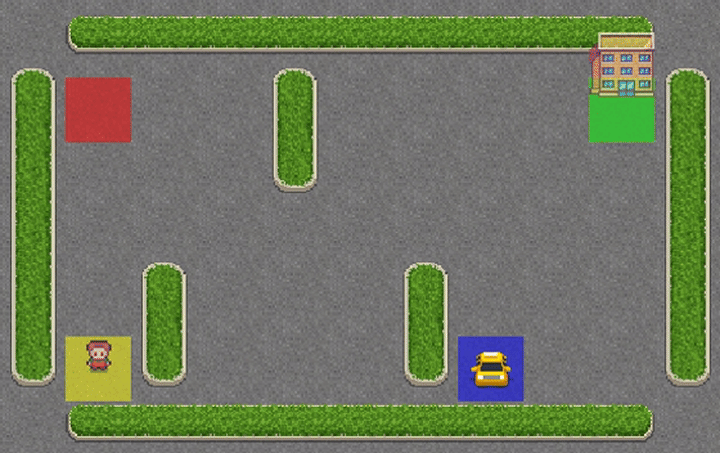

Q-Learning agent navigating the 5x5 grid, picking up the passenger (red square) and dropping them at the correct destination
Implemented a tabular Q-Learning agent from scratch in Python to solve the Taxi-v3 environment from Gymnasium. The agent operates on a 5x5 grid world with 500 discrete states and 6 possible actions - it must navigate to a passenger, pick them up, and deliver them to the correct destination while minimizing total steps and avoiding illegal moves.
Taxi-v3 is a canonical discrete planning problem that tests whether an agent can learn optimal multi-step sequential behavior from pure interaction with the environment. The challenge is the credit assignment problem - reward is only received at successful delivery, so the agent must propagate value estimates backwards through a long sequence of actions to learn which early decisions were actually good.
Tabular Q-Learning solves this by maintaining an explicit Q-table of state-action values updated via the Bellman equation - making the value propagation process transparent and mathematically grounded. This is the foundation upon which all deep RL methods build.
The Q-table is initialized to zeros and updated at each timestep using the Bellman update rule: Q(s,a) = Q(s,a) + alpha * (r + gamma * max Q(s',a') - Q(s,a)). Epsilon-greedy exploration balances exploitation of learned values with random action selection, with epsilon decaying over training to shift from exploration to exploitation.
Off-policy TD control via Bellman equation updates on discrete state-action table
Exploration strategy with decay schedule balancing exploration and exploitation
Taxi-v3 discrete grid environment
Q-table storage and vectorized update operations
Implementing Q-Learning from scratch - rather than using a library - forced a deep engagement with the Bellman equation as a practical update rule rather than a theoretical concept. Seeing Q-values evolve episode by episode, and understanding exactly why the agent prefers one action over another at any given state, builds intuition that is directly transferable to understanding why DQN and PPO behave the way they do in more complex settings.
The epsilon decay schedule also had a surprisingly strong effect on final performance. Decaying too fast caused premature exploitation of a suboptimal policy; too slow wasted training time on random exploration after values had already converged.